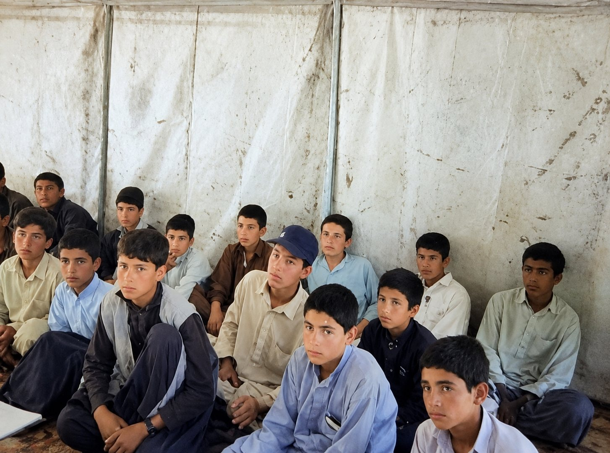

Towards total community development
The Civil Affairs Organization of Afghanistan (CAO) works with women, children, youth and older citizens to improve their socio-economic wellbeing through health, education, food security, water and shelter.
Community participation for sustainable development
CAO reaches out to marginalized sections of society, especially women, children and youth, and empowers underprivileged communities on gender and their rights.
Since its establishment, CAO has implemented many projects funded by UN agencies and other international donors, particularly in the western region. Today a qualified and energetic team carries that work forward.


People at the heart of our work
Women
Empowerment, reproductive health education, and learning and training for widows and poor women.
Children
Schooling and support for children without a guardian, and programs for street and working children.
Youth
Adolescent reproductive health and rights, non-formal education and skills.
Senior citizens
Access to health services and community support for older people.
Five program areas
Each program is delivered with communities, local government and a team of community-level workers and peer educators.

Community Development
Institutions, capacity and local government

Health and Nutrition
Primary health care, nutrition and hygiene

Agriculture and Livestock
Food security, irrigation and natural resources

Education
Access to quality education and literacy

Disaster Management and Repatriation
Resilience, risk reduction and relief

“To reach out to the marginalized section of the society, especially the women, children and youths of the slums.”CAO mission
Western and central Afghanistan
Our head office is in Herat. Our operational area covers the western provinces and Kabul, and we aim to be active in every province of Afghanistan.
Western region
- Herat
- Ghor
- Badghis
- Farah
Central region
- Kabul
- Wardak
- Parwan
- Kapisa
- Panjshir
- Logar
Built on strong foundations
CAO has written policies for the standards that donors and communities expect, and a strong network with civil society and government organizations.
- Anti-corruption and fraud prevention
- Finance and procurement policies
- Human resources policy
- Code of conduct, including for suppliers
- Prevention of sexual exploitation and abuse
- Child protection and gender policies
- Security and risk management
- Organizational by-laws
Our work in pictures

Work with us
We welcome partnerships with donors, UN agencies, NGOs and government bodies.